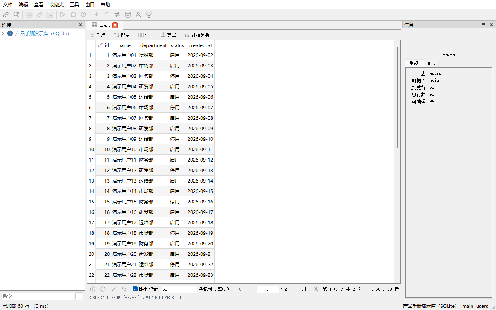
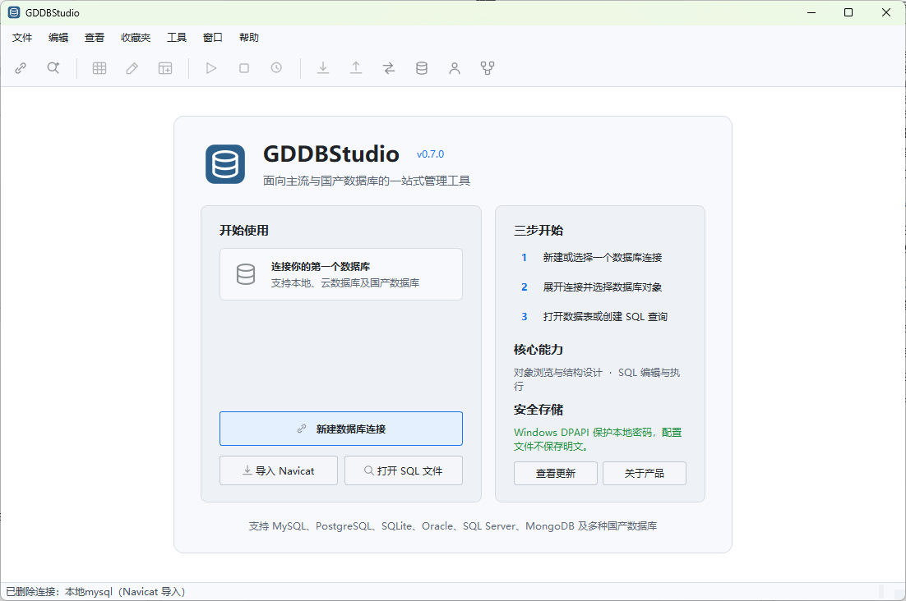

多数据库统一入口
MySQL、MariaDB、SQLite、PostgreSQL、SQL Server、Oracle、Redis、MongoDB 以及多款国产数据库，统一在一个软件中管理。

为日常数据库运维、开发与测试工作设计，界面布局贴近常用数据库客户端，上手无门槛。
MySQL、MariaDB、SQLite、PostgreSQL、SQL Server、Oracle、Redis、MongoDB 以及多款国产数据库，统一在一个软件中管理。
分页浏览、筛选、查找替换、单元格编辑、新增删除、设为 NULL，支持事务提交与撤销修改，编辑过程可控。
语法高亮、自动完成、整段或选中执行、停止执行、多结果集展示、SQL 美化，并保留执行历史与已保存查询。
连接配置、界面设置、SQL 历史与运行日志保存在本机，软件不做外部网络上报。
覆盖数据库日常工作的主要场景。
新建、测试、编辑、复制和删除连接；支持 URI 新建、SSL 加密、SSH 隧道、只读连接和连接颜色标识；可从 Navicat 批量导入连接。
按连接、数据库、模式、表、视图、字段、索引、外键、约束、触发器等层级浏览，支持搜索与刷新，并可收藏常用对象。
分页加载、跳页、筛选、查找与替换、编辑、新增、删除、设为 NULL，支持事务提交和撤销修改。
SQL 高亮与自动完成，支持整段与选中执行，多结果集，SQL 美化，文件保存，以及 SQL 执行历史记录。
新建表、编辑字段、维护索引，查看外键与触发器，配置表选项；生成 DDL 并确认后再执行，避免误操作。
CSV 导入；CSV、SQL、Excel 导出；跨连接数据传输，便于测试数据准备与结果核验。
支持数据库与数据表转储，结构与数据可分别导出，为备份和迁移提供基础支持。
查看与维护数据库用户账号及权限，方便管理员集中处理账号问题。
查看 ER 模型辅助理解表关系；支持主题、界面字体、编辑器字体、自动提交、删除确认、查询行数上限等个性化设置。
以下截图来自软件实际界面。
工具栏点击“新建连接”，在数据库类型列表中选择目标数据库（支持按“国产信创”筛选），填写主机、端口、用户名和密码，点击“测试连接”成功后保存。
双击表名即可打开数据网格，分页浏览大数据量表，支持跳页、刷新、筛选条件和查找替换。单元格可直接编辑，修改可在事务中统一提交或撤销。
新建查询标签页，编写 SQL 后可整段或选中部分执行，结果以表格形式展示，多条语句会生成多个结果集。
在表设计器中查看与修改字段、索引、外键、触发器和表选项。所有修改先生成 DDL 并展示给你确认，确认后才会执行。
CSV 文件可按字段映射批量导入并预览前几行；数据可导出为 CSV、SQL 或 Excel；还能把数据从一个连接直接传输到另一个连接。
可以设置界面主题、界面字体和编辑器字体，并配置自动提交、删除确认、信息面板显示以及查询结果行数上限，按自己的习惯使用。
实际可用性取决于对应驱动、操作系统组件、数据库版本与账号权限。软件已内置常见驱动，无需额外安装驱动包（以发布版本说明为准）。
连接时可选择数据库类型，系统会自动预填默认端口与初始库，并可通过“国产信创”标签快速筛选。
当前版本 ，发布日期 。如有新版本，请回到本页面下载最新安装包。
GDDBStudio.exe（Windows）或目录内的 GDDBStudio 程序（Linux）。想先熟悉软件，可以选择 SQLite，无需部署数据库服务，也无需填写主机和端口。

升级方法：下载新版本安装包，解压到新目录即可。连接配置保存在用户目录中，一般无需重新配置。
保存的数据库密码使用 Windows DPAPI 进行本地保护，绑定当前 Windows 用户和计算机。连接配置文件复制到其他机器或其他 Windows 账号下无法解密密码。
Linux 版当前为降级保护，仅适合开发调试环境。在生产或高安全级别场景下，建议不勾选“保存密码”，每次连接时手动输入。
连接配置、界面设置、SQL 执行历史和运行日志默认保存在本机，软件不进行外部网络上报。
建议为软件使用的数据库账号分配所需的最小权限；对生产库可使用只读连接，降低误写入风险。